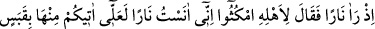
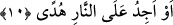
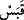

10. Hani o, bir ateş görmüştü de âilesine: “Siz durun, ben bir ateş gördüm, belki
ondan size bir kor getiririm, yahut ateşin yanında bir yol gösteren bulurum.”
demişti.
“Hani o, bir ateş görmüştü de…”
Rivayete göre Mûsâ (a.s.) Şuayb (a.s.)’ın kızı Sâfûrâ -Süheylî’nin görüşüne göre
Sâfûrya- ile evlendi. Annesini ve kardeşi Hârun’u ziyaret etmek için Medyen’den çıkıp
Mısır’a gitmek üzere Şuayb (a.s.) dan izin aldı. Şam krallarından korktuğu için normal
yolu bırakıp bilinmeyen bir yol tuttu. Tur dağının batısındaki Tûvâ vâdisine karanlık,
soğuk ve karlı bir Cuma gecesinde ulaşınca hanımı bir oğlan doğurdu. Mûsâ (a.s.)
çakmak çaktı, ama ateş çıkmadı, sâdece ses çıktı.
Denilir ki Mûsâ (a.s.) çok kıskanç biriydi. Hanımını başkaları görmesin diye geceleri
insanlarla, gündüzleri yalnız başına âilesiyle seyahat ederdi. İşte bu yüzden yolu ve yol
arkadaşlarını kaybetti. Yolunu bulmaya çalışırken Tur tarafından yolun sol tarafında bir
ateş gördü ve çobanların ateşi zannetti. “Ailesine” yani hanımı, çocuğu ve hizmetçisine
“siz durun” beni burada bekleyin peşimden gelmeyin, dedi. İbn Melek’in Şerhu’l-
Meşârık’ında belirtildiğine göre “
” hanımlar, çocuklar, köleler, câriyeler, akraba ve
arkadaşlar diye tefsir edilir.
“Ben bir ateş gördüm” “el-Înâs” şüpheye mahal bırakmayacak şekilde açık olarak
görmektir. ‘İnsânü’l-ayn’ yani göz bebeği kelimesi de buradan gelmektedir. Çünkü her
şey onunla görülür. Aynı şekilde görüldüğü için insanlara “ins”, görülmediği için
cinlere “cin” denilmiştir.
“Belki ondan size bir kor getiririm.” Mûsâ (a.s.): “Ben ateşi apaçık gördüm. O
ateşten bir kıvılcım, bir parça getirmeyi ümid ederek gidiyorum” demek istemiştir.
“
(kor)”, ateşten alınan ve alev veren ateş parçası demektir. Neml sûresi 7. âyette
geçen “eş-şihâbü’l-kabes” ve Kasas sûresi 29. âyette geçen “el-cezve” kelimeleri de
aynı mânâdadır.
Hz. Mûsâ, yerine getireceğini kesin olarak bilmediği bir söz vermemek için: “Ben
muhakkak ateş getireceğim.” demedi, “Belki” kelimesini kullandı. Hz. Mûsâ’nın daha
peygamber olmadan yalan şâibesinden nasıl kaçındığına dikkat et.
Müfessirlerin çoğu Mûsâ (a.s.)’ın gördüğü şeyin ateş değil, Rab Teâlâ’nın nûru
olduğunu söylemiştir. Mûsâ (a.s.) bu nûru ateş zannettiği için âyet de nur “ateş” kelimesi
ile ifâde edilmiştir. Fahreddin Râzî ise Mûsâ (a.s.)’nın sözünde sâdık olması için
doğru olanın onun ateş görmüş olduğunu söyler. Çünkü yalancılık peygamberler için
câiz değildir.
Büyüklerden birisi şöyle der: Mûsâ (a.s.)’ın amacı ateş bulmak olduğu için kendisine
yönelip yüz çevirmemesi için Allah, onun istediği mecâzî sûrette tecellî etmiştir. Eğer